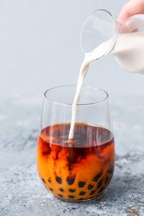
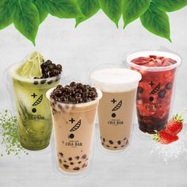
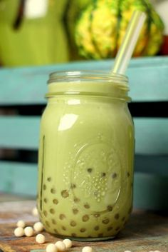

タピオカミルクティー

黒糖タピオカミルクティー

ベトナムに来るとタピオカミルクティー店が多くて驚く方も多いのではないでしょうか？ 日本でも人気のあるタピオカミルクティーは、台湾が発祥と言われていますが、ベトナムにも多くの店が軒を連ねています。タピオカといえば飲み物を思い浮かべる方がほとんどだと思いますが、実はベトナムにはタピオカ粉を使った麺料理もあります。今回はベトナムに店を構えるタピオカミルクティー店やベトナムで実はポピュラーなタピオカ粉を使った麺を紹介します。 ベトナム国内は50店舗ほど展開していて、その半数はホーチミン市内にあります。ベースのお茶からトッピングまでカスタマイズ出来る、お茶専門店です。コーヒーは無いという硬派ぶりで、「WE ARE DIFFERENT BECAUSE WE REALLY LOVE TEA」というスローガンが、強気さを感じさせます。メニューはタピオカミルクティーのみならず、フレーバーティーやスムージーなど様々な種類があります。 注文する際に自分好みの甘さと氷の量を選ぶことができるのが嬉しいですね。もちもちした食感とすっきりとした甘さのミルクティーがとても美味しいです。 .
